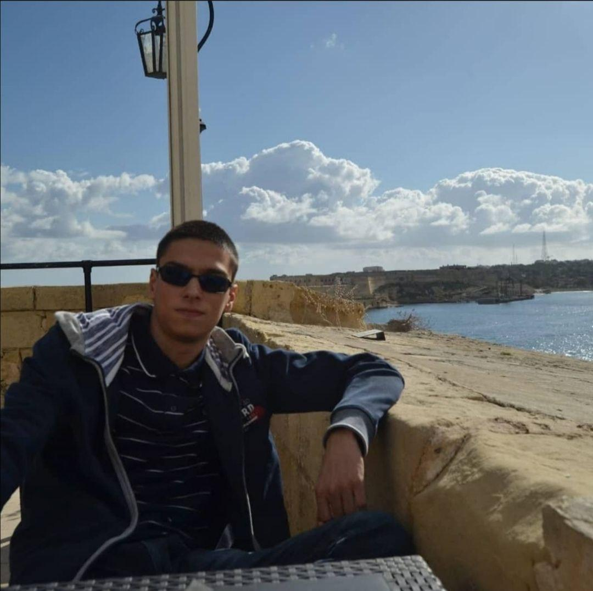
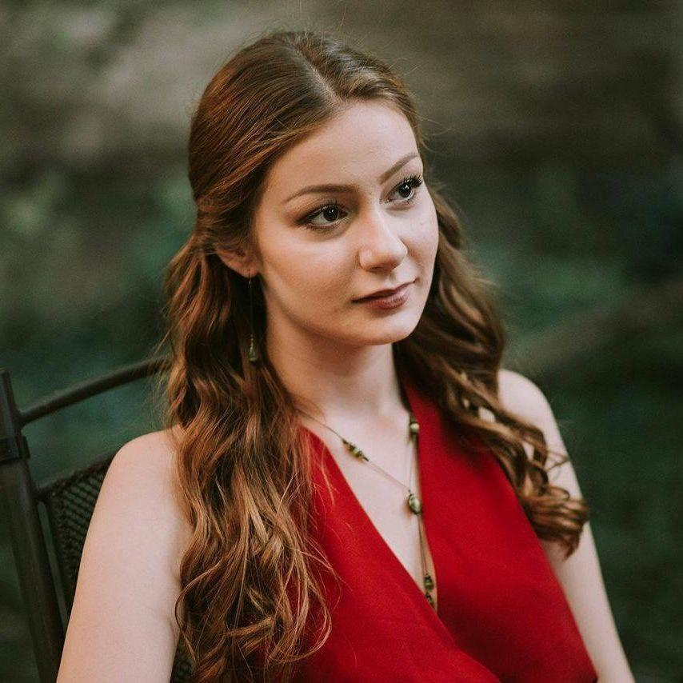

Steddy
The honeypot of knowledge
O projektu
u naučno obrazovanoj razmeni znanja i iskustava online kroz odredjene mogućnosti:
Deljenje skripti koje bi bile ocenjivane od strane oformljene zajednice.
Ocenjivanje bi se vrsilo uz pomoc bodovnog sistema u vise kategorija,
što se više poena ostvari, vrednost (kvalitet, verodostojnost, relevantnost) skripti i samog kreatora sadrzaja raste.

mogućnost naplaćivanja ili deljenja skripti bez ikakve nadoknade u zavisnosti za šta se kreator sadržaja opredeli.
Ukoliko student kreator sadrzaja to zeli platforma mu takodje omogucava zakazivanje konsultacija sa
korisnicima njegovog sadrzaja u svrhu da im taj sadrzaj bolje priblizi i objasni za sta bi bio kompenzovan.
Ucestvovanje na platformi je ilustrovano dobijanjem
odredjenih bedževa koji bi bili vizuelna prepoznatljivost pouzdanog sadržaja i redovnih ucesnika na platformi.
O nama
Steddy aplikacija nastala je od ideje i inspiracije tri studenta Matematičkog fakulteta, Ilije, Jovana i Mateje,tokom učenja za ispitni rok.
Shvatili smo da nam, u proseku, na prikupljanje i snalaženje među dodatnom literaturom, skriptama i beleškama za jedan ispit ode skoro isto vremena kao i na samo učenje.
Upravo ova muka inspirisala nas je na realizaciju ideje o aplikaciji koja će na jednom mestu sadržati sve najbolje studentske skripte,
za bilo koji ispit na bilo kom fakultetu u Beogradu, Srbiji, Balkanu i (nadamo se) šire.
Podelili smo ideju sa ljudima iz našeg okruženja i vrlo brzo napravili tim ambicioznih studenata,
budućih stručnjaka iz oblasti informacionih tehnologija, odnosa sa javnošću, novinarstva i digitalnog marketinga.
Ilija
Student Matematičkog fakulteta u Beogradu, smera za Informatiku. Imam dosta iskustva u app development-u, embedded programiranju i web tehnologijama i uvek sam raspolozen da prosirim svoje polje ekspertize.
Mateja
Student Matematičkog fakulteta u Beogradu, smera za Informatiku, pored toga sam i deo mentroskog programa za pomoc brucosima pri prilagodjavanju na faks. Interesuju me algoritmi, programski jezici i optimizacija. U slobodno vreme igram Final Fantasy XIV i ucim japanski jezik.
Jovan

Student Matematičkog fakulteta u Beogradu, smera za Informatiku. Od malih nogu sam voleo da sklapam i rasklapam računare i uz njih sam naučio da budem precizan, asertivan i problem-solver. Opušta me sklapanje tastatura, svoju karijeru bih najviše voleo da razvijam u pravcu web development-a, embedded-a i lot-a.
Jana
Studiram na Fakultetu za medije i komunikacije u Beogradu, modul za Digitalni marktering. Posebno me interesuju oblasti SEM/SEO, PPC, marketing kroz sadrzaj, kao i marketing na drustvenim mrezama
Vuk
Student sam na Fakultetu za medije i komunikacije, smer Novinarstvo i komunikacije. Zanimaju me i oblasti odnosa sa javnoscu, kao i copywriting. Moje snage su odlicno snalazenje i timskom radu i sviranje gitare.
Sasa

Studiram na Elektrotehnickom fakultetu, na smeru Elektrotehnika i racunarstvo. Kroz aktivan rad u studentskim organizacijama razvila sam ljubav prema marketingu i upravljanju projektima. U slobodno vreme volim da resavam sudoku i pijem velike kolicine kafe sa prijateljima.